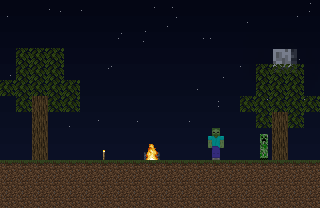
Выживание
Добывай ресурсы, крафти инструменты и переживи первую ночь.
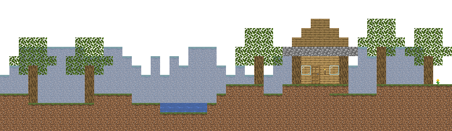
Мир, где каждый блок можно сломать и поставить заново. Строй, исследуй, выживай — как захочешь.
Minecraft — песочница, в которой мир бесконечен и целиком состоит из кубов. Здесь нет единственного правильного пути: можно построить замок, спуститься в шахту за алмазами, завести ферму или отправиться побеждать Эндер-дракона.
Больше 300 миллионов проданных копий — самая продаваемая игра в истории.
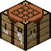
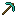
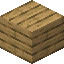
2009 год выхода первой версии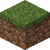
30 млн блоков от центра до края мира
Добывай ресурсы, крафти инструменты и переживи первую ночь.
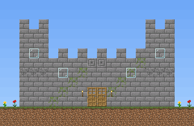
Бесконечные блоки и полёт: строй всё, что придумаешь.
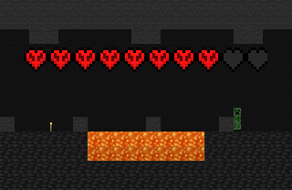
Одна жизнь и максимальная сложность. Умер — мир потерян.
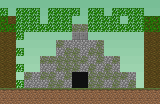
Карты и квесты, которые придумали другие игроки.
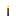
Листай вбок — и запоминай, от кого бежать.
Тихо подходит и взрывается. Держи дистанцию.
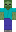
Появляется ночью и сгорает на солнце.
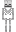
Стреляет из лука издалека. Прячься за блоками.
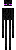
Не смотри ему в глаза — и он тебя не тронет.
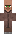
Мирный сосед. Торгует за изумруды.
Выбери рецепт — верстак разложит материалы сам.
Создание
Нажми на рецепт, чтобы увидеть, как он собирается.
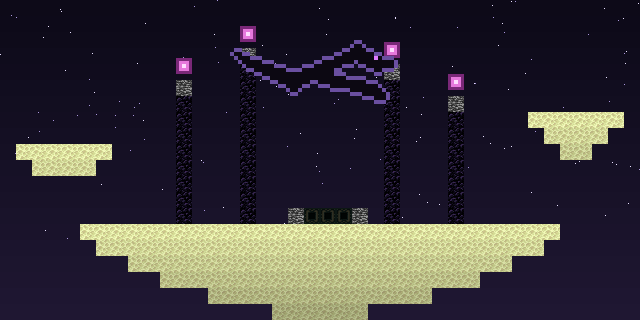
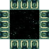